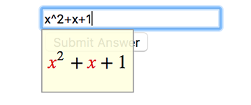

Responses
Problems in LON-CAPA can have different kinds of responses: some may be multiple-choice and others may be fill-in-the-blank.
When creating a problem, using the correct response type is important. While different response types may be used to create the same problem, usually one type is most suited.
Note: responses are complex and have many features. This manual aims to explain the uses and basic features of each response type.
Response Parameters
Parameters are settings which control a specific response property, such as tolerance or maximum number of tries. Parameters are defined by a name attribute, which specifies the kind of parameter, a type attribute, which specifies the type of the parameter value, and a default attribute, which specifies the parameter value.
Note that not all responses can use every parameter type: for example, string response problems cannot have a numerical tolerance.
Below are some commonly used parameters.
Tolerance
Tolerance is a parameter that determines how close a student answer must be to the answer in order to be counted correct. Tolerance can be absolute (a specific numerical range) or relative (a percentage).
<responseparam name="tol" type="tolerance" description="Numerical Tolerance" default="<x>" />
Significant figures
Significant figures is a parameter that indicates how many significant figures are required for the answer. The setting can be either a single integer or two comma-separated integers to specify a range. If this setting is used, it is important to inform students of the acceptable range of significant figures in the problem.
<responseparam name="sig" type="int_range" description="Significant Digits" default="<min>,<max>" />
Maximum number of tries
<responseparam name="maxtries" type="int_zeropos" description="Max # tries allowed" default="<x>" />
Response Types
Numerical Response
<numericalresponse> is used for simple numerical answers: they are answered with a number and an optional unit. They can also have tolerance and significant figures parameters.
<numericalresponse answer="128" unit="kg">
<!-- Absolute tolerance: ±0.01 -->
<responseparam name="tol" type="tolerance" description="Numerical Tolerance" default="0.01" />
<!-- Significant figures: must be 3 to 10 -->
<responseparam name="sig" type="int_range" description="Significant Digits" default="3,10" />
<!-- Answer line -->
<textline />
</numericalresponse>
Formula Response
<formularesponse> is used for answers that are mathematical expressions. They can feature variables, constants, and mathematical operator and also accept equivalent answers. For example, a formula response problem that has an answer of x^2+x+1 will also accept x*(x+1)+1 or -x+(x+1)^2.
When answering formula response problems, students will see a yellow prompt that displays their answer formatted in LaTeX:

Similar to numerical responses, formula responses can also have a tolerance parameter. However, a tolerance may not be desirable for problems with non-numerical answers. Also, vanilla formula response is not suited for problems that specifically require simplified answers as formula response accepts equivalent unsimplified answers. Such problems should either use a different response type, such as string response, or include a preprocessor subroutine that checks for simplified answers.
<formularesponse answer="x^2+x+1" preprocess="stringcheck">
<!-- Answer line -->
<textline readonly="no" spellcheck="none" />
</formularesponse>
String Response
<stringresponse> is used for answers that are a string of characters. Most problems have answer that can be treated as a string of characters, but string response is best suited for problems with answers that can easily be identified as correct or incorrect. Many string response problems include preprocess subroutines that perform further answer validation.
<stringresponse answer="(2,-2)" preprocess="stringcheck">
<!-- Answer line -->
<textline readonly="no" spellcheck="none" />
</stringresponse>
Custom Response
<customresponse> allows answers to be graded based on a custom algorithm. It offers a great deal of flexibility and is ideal for answers that require a lot of processing, but responses will not be analyzable by the LON-CAPA statistics tools.
Custom response problems must include an <answer> tag which contains Perl code that evaluates student answers and returns a standard LON-CAPA response. If a custom response has a single text field, the student answer will be in a variable $submission. If there are multiple text fields, each answer can be accessed from the @submission array: $submission[0] refers to the first answer.
Common LON-CAPA responses include:
| Name | Purpose |
|---|---|
EXACT_ANS |
exactly correct solution |
INCORRECT |
incorrect solution |
ASSIGNED_SCORE, <float> |
partial credit with specified amount |
NO_RESPONSE |
no student solution |
EXTRA_ANSWER MISSING_ANSWER WRONG_FORMAT NO_UNIT |
incorrect for various reasons, does not use up an attempt |
The answerdisplay attribute specifies the answer that is shown instead of the student answer after the answer date.
<customresponse answerdisplay="-2,2">
<answer type="loncapa/perl">
# Remove spaces from submission
$submission =~ s/ //g;
# Make array of comma separated values from submission
@input = split(',', $submission);
# Check for extra and missing values
if (scalar @input > 2) {
return 'EXTRA_ANSWER';
}
elsif (scalar @input < 2) {
return 'MISSING_ANSWER';
}
# Check for correct values
else {
if ($input[0] eq '-2' && $input[1] eq '2') {
return 'EXACT_ANS';
} elsif ($input[0] eq '2' && $input[1] eq '-2') {
return 'EXACT_ANS';
}
}
return 'INCORRECT';
</answer>
<textline readonly="no" spellcheck="none" />
</customresponse>
Radio Button Response
radiobuttonresponse is used for multiple choice questions.
The direction attribute controls the direction in which the foils, or answer options, are displayed: the vertical direction is almost always preferred over the horizontal one. The randomize attribute controls whether or not the ordering of the foils is randomized. The max attribute controls the maximum number of foils shown: this is relevant when there are many foils but only a few random ones should be displayed.
Radio button responses require a <foilgroup>, which contains the foils.
Each <foil> has a location attribute, which can be top, bottom, or random. The value of a foil determines whether or not it counts as a correct answer: true is correct and false is incorrect.
Note: In the case that max is less than the total number of foils, at least one of the displayed foils will have a value of true. This guarantees that at least one foil will count as a correct answer.
<radiobuttonresponse direction="vertical" max="10" randomize="yes">
<foilgroup>
<foil location="random" value="true" name="foil1">
<startouttext />Option 1<endouttext />
</foil>
<foil location="random" value="false" name="foil2">
<startouttext />Option 2<endouttext />
</foil>
<foil location="random" value="false" name="foil3">
<startouttext />Option 3<endouttext />
</foil>
<foil location="random" value="false" name="foil4">
<startouttext />Option 4<endouttext />
</foil>
</foilgroup>
</radiobuttonresponse>
Preprocessor Subroutine
Responses in LON-CAPA can specify a preprocessor subroutine using the preprocess="<subroutine>" attribute. Responses with this attribute pass their answers through the specified subroutine and the return value of the subroutine is used for final answer evaluation. Read the Subroutines section for more information about writing and using subroutines in Perl.
The input answer can be accessed in the subroutine via the @_ array variable. The subroutine should return an answer so that it may be processed by the response.
Subroutines are particularly important for formula responses as they require answers to be in a specific format. For example, products of variables must explicitly contain asterisks between each variable . Using a preprocessor subroutine, it is possible to transform answers of the form into the form so that they may be interpreted correctly.
Example
sub stringcheck {
my ($response) = @_;
# Remove spaces
$response =~ s/ //g;
# Add star after digit or ')' followed by a variable or '('
$response =~ s/((\d|\))(?=([x-z]|\()))/$1\*/g;
# Return statement
return $response;
}
<formularesponse answer="2*x*y*z" preprocess="stringcheck">
<textline readonly="no" spellcheck="none" />
</formularesponse>
In the above example, an input of 2xzy will be processed into 2*x*z*y by the stringcheck subroutine. The formula response will then recognize 2*x*z*y as an acceptable answer as it is equivalent to 2*x*y*z.